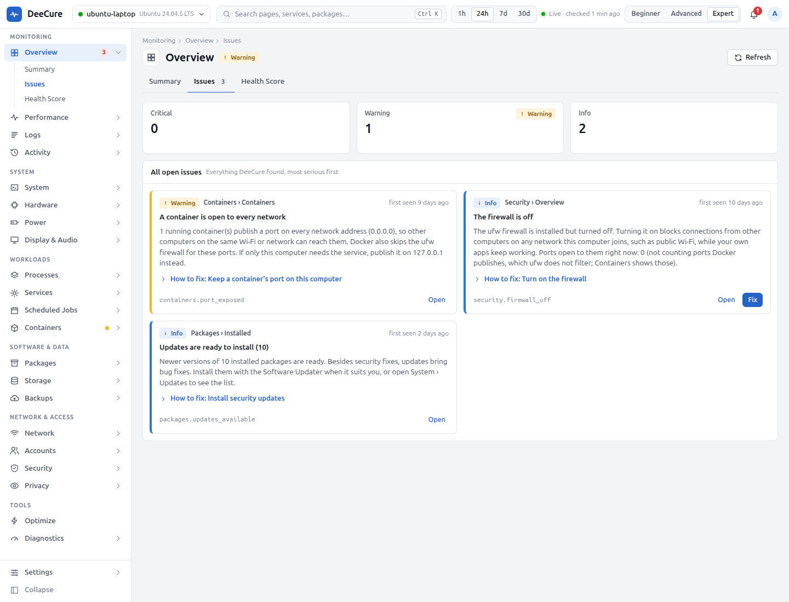
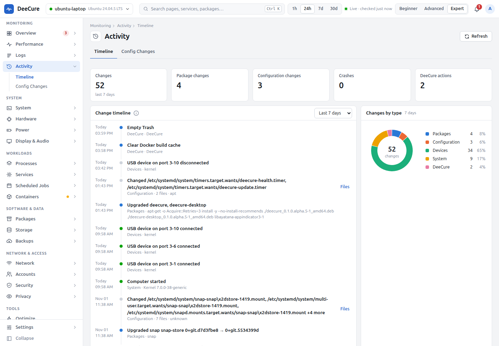

Health at a glance
Everything that matters, on one screen.
Free and open source · Ubuntu 24.04 and 26.04
Every Linux computer, desktop or server, has some issue in the hardware or the software that you cannot see and that is hard to investigate. DeeCure checks every layer deeply, explains what it finds in plain English, and fixes problems with one click. Every fix can be undone.
curl -fsSL https://raw.githubusercontent.com/krisskad0/DeeCure/main/packaging/install.sh | sudo sh
Latest release on GitHub · No account · No cloud · No tracking
What it does
One health score
Before it breaks
Plain English
Preview, then undo
One scan
See it in action
Everything that matters, on one screen.

What is wrong, why, and how to fix it.
Only what your computer really needs.
Health, drain, and charge limits.

Every update, setting, and device.
Problems it solves
Finds the cause
Checks each limit
One-click clean-up
Shows what drains it
Checked every day
See what changed
Full security check
Names the device
Private and safe by design
Switch views any time. Same app, more or less detail.
Also in the terminal
Everything also works without a desktop. Add --json for your own scripts and monitoring.
# health score and problems, in plain English
deecure status
# what changed in the last 2 days
deecure history --since 2d
# a 7-day report to share
deecure report --html report.html
# preview a fix, then run it after you say yes
deecure fix storage.free_spaceDownload
For Ubuntu 24.04 LTS and 26.04 LTS on 64-bit PCs. See the newest release on GitHub.
Open the Terminal (Ctrl + Alt + T), paste this, and press Enter. Then open DeeCure from the app menu. It keeps itself up to date.
curl -fsSL https://raw.githubusercontent.com/krisskad0/DeeCure/main/packaging/install.sh | sudo sh
Only the background agent and the deecure command.
curl -fsSL https://raw.githubusercontent.com/krisskad0/DeeCure/main/packaging/install.sh | sudo sh -s -- --server
Download both, then run sudo apt install ./deecure*.deb in that folder.
DeeCure is in pre-release. Install guide, including how to update and uninstall.
FAQ
Yes. It is free and open source under the Apache-2.0 license. There is no paid version and no account.
Ubuntu 24.04 LTS and Ubuntu 26.04 LTS on 64-bit PCs. On a server without a desktop, install only the agent and the deecure command with --server.
No. Everything stays on your computer. The only connection is a check for DeeCure updates on GitHub, which sends nothing about your computer and can be turned off.
DeeCure only reads unless you ask for a fix. Every fix shows its steps first, asks for your password only for admin steps, checks the result, and keeps an undo where undo is possible. Guard rails refuse changes that would remove the desktop, the network, sudo, or the running kernel.
Very little: about 0.1% CPU and about 21 MB of memory when idle. Two years of history fit in under 200 MB.
A task manager shows numbers. DeeCure tells you which numbers are a problem on your hardware, explains them in plain English, keeps a history of what changed, and fixes problems safely with undo.